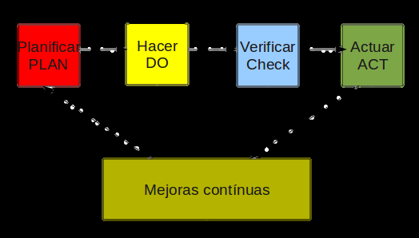

El objetivo de un Sistema de Gestión de la Seguridad de la Información (SGSI) es proteger la información y para ello lo primero que debe hacer es identificar los 'activos de información' que deben ser protegidos y en qué grado. Luego debe aplicarse el plan PDCA ('PLAN – DO – CHECK – ACT'), es decir Planificar, Hacer, Verificar, Actuar y volver a repetir el ciclo. La organización debe entender la seguridad como un proceso que nunca termina ya que los riesgos nunca se eliminan, pero se pueden gestionar. De los riesgos se desprende que los problemas de seguridad no son únicamente de naturaleza tecnológica, y por ese motivo nunca se eliminan en su totalidad. Un SGSI siempre cumple cuatro niveles repetitivos que comienzan por Planificar y terminan en Actuar, consiguiendo así mejorar la seguridad.

PLANIFICAR (Plan): consiste en establecer el contexto.
HACER (Do): consiste en implementar el sistema
VERIFICAR (Check): consiste en monitorear y revisar
ACTUAR (Act): consiste en ejecutar tareas de mantenimiento y propuestas de mejora